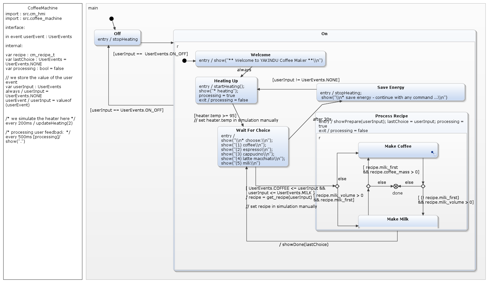

This is a comprehensive example for the deep integration of YAKINDU statecharts with manually written C code. The example is implemented as a simple command line tool. It makes use of POSIX threads. So you need a compiler tool chain and a 'pthread' library to build an run the example. The underlying statechart for the coffee machine looks as follows:  The statechart consists of two major states "ON" and "OFF". The "ON" state is a composite state with several substates and substate machines for the different modes.
The source code artifacts are all located in the 'src' folder. File names that include 'coffee' or 'cm_' include application specific implementations and those with 'sc_' prefix are generic parts that belong to the state machine infrastructure.
As mentioned above you need a compiler tool chain and the 'pthread' libraries. If you have a Linux or Mac OS Xsystem you likely have everything installed. If you run Windows than we propose to install cygwin tools (https://www.cygwin.com).
This project is preconfigured for Windows with cygwin. If you use another system:
In the 'Debug' or 'Release' folder you will find an executable 'coffee_machine_pro.exe' (even on Linux and Mac OS X). Right-click on this and choose:
Additionally you can simulate the statechart by right-click and choose:
You may want to change or extend the model. Within the embedded
expression editor
you can press 'Ctrl-Space' to get proposals, which
also include the C
elements from
the imported C header files.
If you have changed the model you can generate state machine code by right-click on 'CoffeeMachine.sgen' and choose 'Generate Code Artefacts'. This will generate: